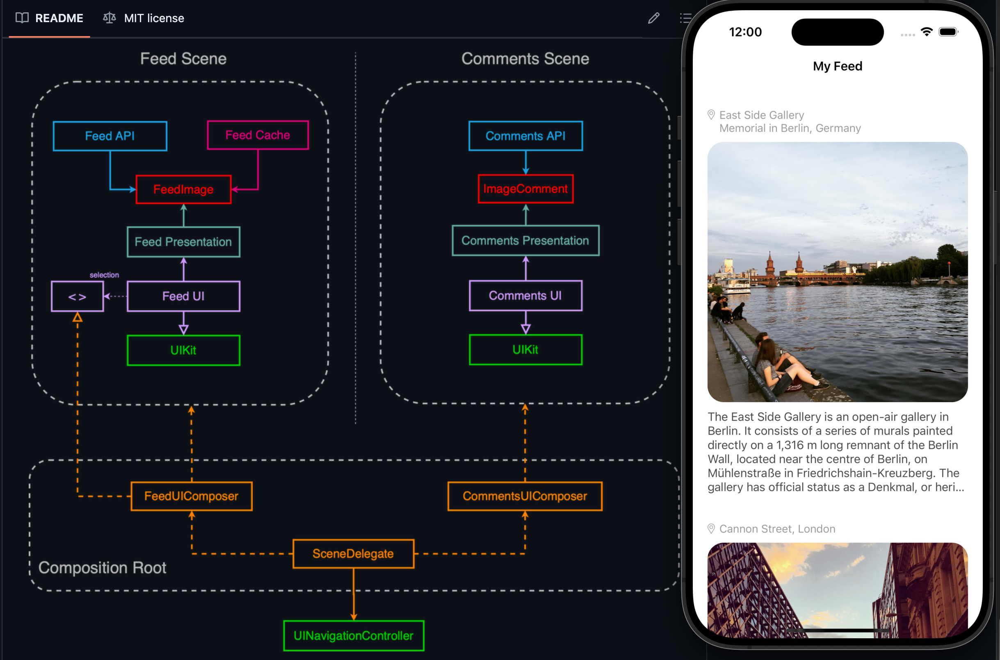
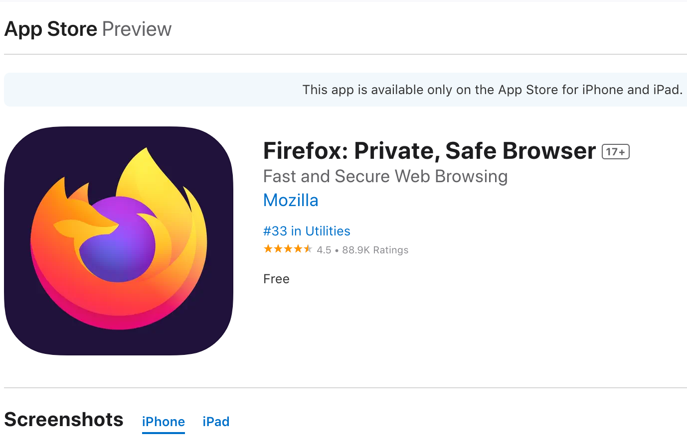
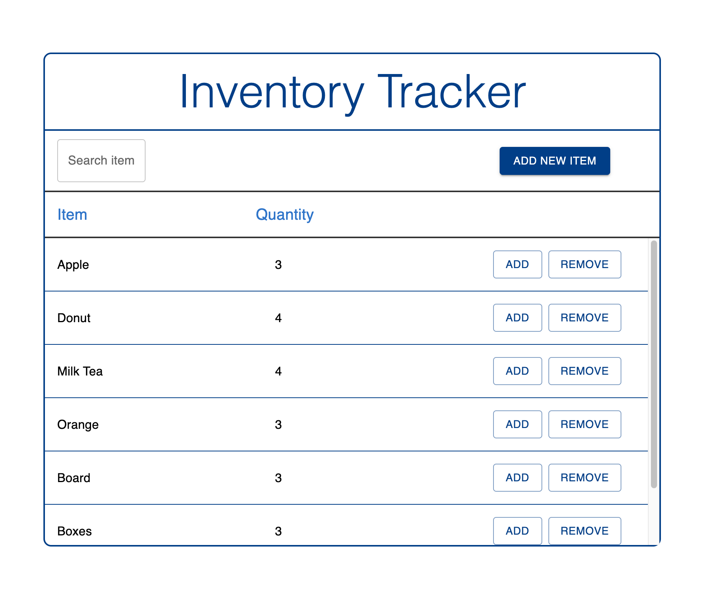

About
I graduated from UC San Diego in 2020 with a degree in Math and Computer Science. Afterward, I had the incredible opportunity to work as an iOS Software Engineer at Lululemon and USAA, where I loved creating mobile features that enhance user experiences. Now, I'm back in school, pursuing a master's in Software Engineering to deepen my expertise and stay at the cutting edge of technology.
In my free time, I love sports, EDM and passionate about exploring new technologies and building projects that challenge and excite me.
Experience
iOS Engineer, Lululemon Oct 2021 - May 2023
Delivered iOS apps that provide a seamless VoIP experience between guests and stores, utilizing Swift and Objective-C. Integrated CallKit and third-party systems to enhance calling capabilities and developed rapid prototypes to showcase potential features and user experiences
Mobile Engineer, USAA Apr 2021 - Sep 2021
Developed innovative solutions for users on USAA's iOS and Android apps, including implementing live map view updates for roadside assistance using SwiftUI.
Projects

My Feed, iOS Mobile App
My Feed enables users to seamlessly browse the latest images both online and offline. Employed Clean Architecture and SOLID principles to build a modularized app.
This project was developed following the guidelines of the iOS Lead Essentials Program, ensuring best practices in architecture, testing, and clean code principles.

Mozilla Firefox, Open Source Contributor
Firefox is a people-first browser, supported by a non-profit organization that prioritizes your privacy. It offers more ways than ever to customize your internet experience to fit your preferences.

Pantry Tracker, Full Stack Web App
Built a CRUD Full Stack web app to keep track of inventory stock, leveraging JavaScript, React.js, Next.js, Material UI, Firebase Firestore, and deployed on Vercel.